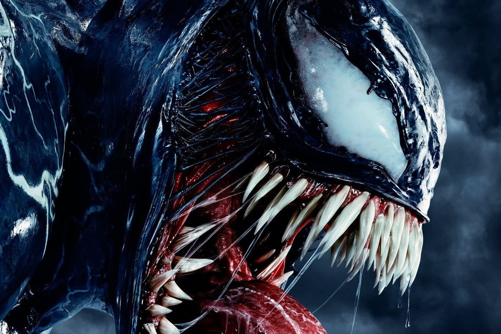

About Venom
The symbiote that later became known as Venom was created by the dark elder god Knull on a desolate, nameless planet where it saved a group of newborn baby rodentoid aliens by bonding to them and transforming them into apex predators.
Venom digital artwork
Venom's Characteristics
- Superhuman Strength Before he came into contact with the costume, Brock had conditioned himself to lift (press) 700 lb. Once they merged, the costume added Spider-Man’s superhuman strength to Brock’s vast human strength, making him more powerful than Spider-Man. However, his full strength often fluctuates. Venom has demonstrated strength ranging from only slightly greater than Spider-Man's to being capable of trading blows with high-powered individuals such as Juggernaut. This is caused by the several mutations that the symbiote took with Brock, gaining additional bulk and muscle mass over long periods of time with its host.
- Regenerative Healing Factor Additionally, the symbiote is capable of healing injuries in the host at a faster rate than normal human healing allows. The symbiote is also capable of healing injuries and illnesses that current human medical care cannot such as cancer. The symbiote has enabled its host to recover from injuries that should have been lethal, such as Mac Gargan being impaled by the Swordsman's Makluan Sword and Flash Thompson being impaled by Toxin's blade-arm, and having his head sliced in half by Jack O'Lantern V's scythe.
- Telepathy The Klyntar species communicate both psionically and biochemically with the host and each other. Their powers of the mind initially start out as weak without a host to bond too. Venom's years fused to Eddie Brock had more than strengthened its lingering psychic powers to the point its screams of anguish could be felt across all of New York. While indwelled by a demon, Agent Venom employed this creatively through his tendrils to seize control of an army of mercenaries. After coming into contact with Knull, the symbiote displayed the ability to telepathically communicate with other symbiotes.
Venom's Weaknesses
The Venom symbiote has two major weaknesses - sound and fire. Loud noises cause the symbiote to writhe in pain. That's how Peter Parker originally freed himself of the symbiote. A tolling church bell drove the two apart and sent the fleeing symbiote straight into the arms of an unsuspecting Eddie Brock. Even now, sonic weapons tend to be the first line of defense against Venom and his fellow symbiotes. Click on the link below to read more about his weaknesses: